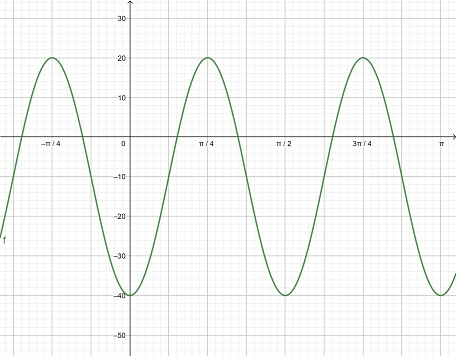

Tracer les fonctions suivantes :
Écrire l'équation des fonctions sinusoïdales suivantes :
- 
Soit les valeurs suivantes :
Sans utiliser les logartithmes sur la calculatrices, calculer :
Résoudre les équations suivantes :
Tracer les fonctions suivantes :
Écrire l'équation des fonctions sinusoïdales suivantes :
Soit les valeurs suivantes :
Sans utiliser les logartithmes sur la calculatrices, calculer :
Résoudre les équations suivantes :
Soit les vecteurs et
suivants :
Soit le vecteur , dont la norme est
de
.
Calculer les composantes du vecteur algébrique associé à ce vecteur.
Soit le vecteur .
Calculer les composantes du vecteur gémétrique associé à ce vecteur.
Résoudre le triangle suivant: